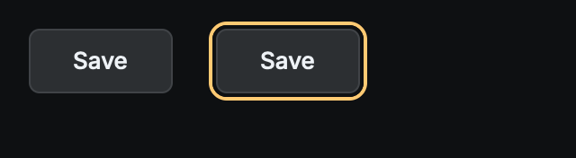
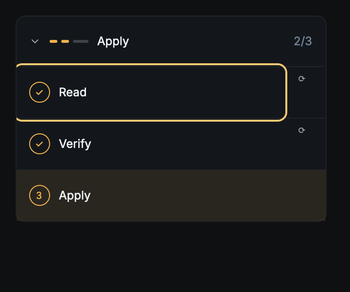
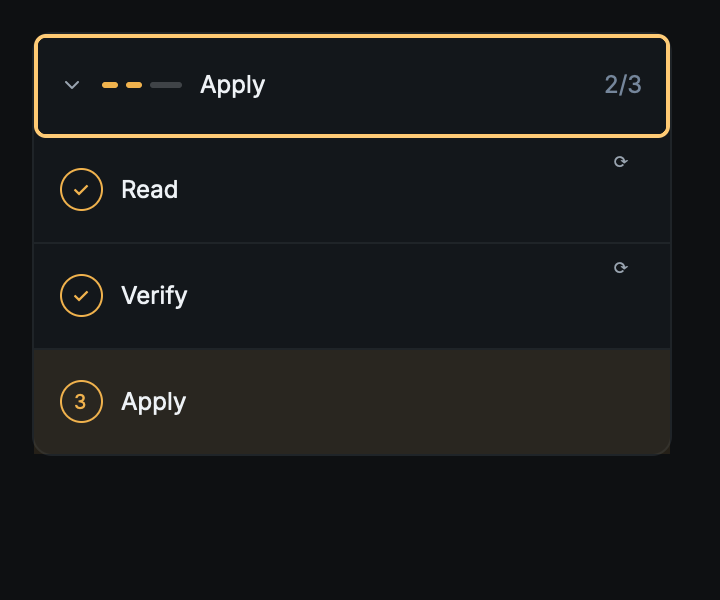

Headless Metal captures (poodle-offscreen-capture --focus-evidence), eclipse theme,
2× device scale, 2026-08-22. Focus moved through the backend's real focus registry — no pointer,
no OS window. Each receipt (*.json) records the paint pass's own ring record
(painted_ring_for); a run where the ring never painted fails instead of capturing.
Repeats are byte-identical (sha256 in the receipts).

accent-focusRing ring 2px outside the preserved 1px resting border (width 2, offset 2
in button.json).
stepper-trigger.json) is the channel's reason to exist. Focus arrived by keyboard
entry (backend focus registry), not a pointer press.
stepper-summary.json) per contract §8.